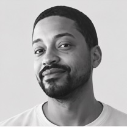

Your SOC, run by hackers.
An AI-powered SOC built and run by offensive-security experts. VEX tests your defenses, investigates threats and brings our team into the response. You know what’s handled and what needs your attention.
Free to use. No demo needed.
A different kind of prevention.
Prevention means less to detect and respond to. Most AI SOCs start at the alert. VEX starts before, by knowing how attackers work, AI and human. Now that’s offensive.
Prevent
We attack first
VEX looks for openings an attacker could exploit, helps close them, then tests again.
Detect
VEX handles the noise
VEX investigates suspicious activity and closes routine signals. What needs you shows up in Slack.
Respond
Human judgment
When a threat needs a person, our security experts step in and help guide the response.
A different kind of prevention.
Prevention means less to detect and respond to. Most AI SOCs start at the alert. VEX starts before, by knowing how attackers work, AI and human. Now that’s offensive.
Prevent
We attack first
VEX looks for openings an attacker could exploit, helps close them, then tests again.
Detect
VEX handles the noise
VEX investigates suspicious activity and closes routine signals. What needs you shows up in Slack.
Respond
Human judgment
When a threat needs a person, our security experts step in and help guide the response.
Your security operations, in Slack.
You don’t need another UI or dashboard.
VEX is autonomous. All you need to see what’s found, what’s been handled and what needs a decision is a Slack account. Ask questions and follow each investigation right in the thread.
Get VEX for Slack, freeNo demo needed. Set it up and see how it works.
Built by people who know how attacks work.
VEX is built by people who’ve worked on both sides of the attack: offensive research, detection engineering and incident response. They bring attacker thinking to the judgment your defense needs.
Founder
David Hunt
MITRE · Mandiant · USG
Head of security
John Jackman
REDLattice · DoD

Head engineer
Phil Urquhart
Mandiant · DoD
Ready to start using VEX?
Get VEX for Slack